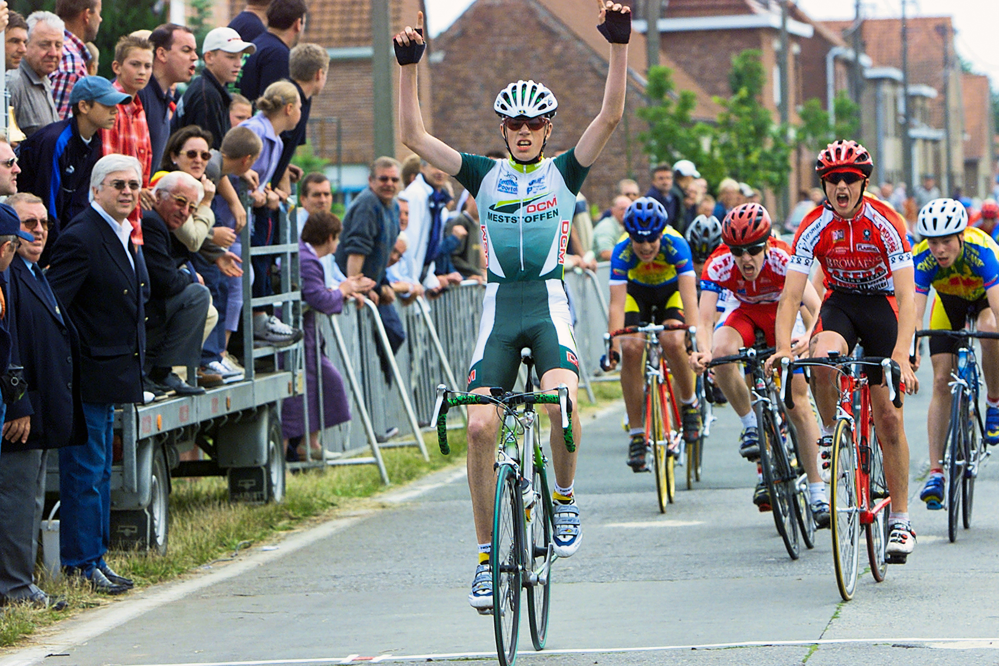

Jaarlijkse vakantie:
Wij zijn gesloten vanaf 22/07 tot en met 05/08! openingsuren
Welkom op onze webstek en mag ik Bike Maintenance even voorstellen. Sinds mijn twaalfde was ik reeds actief als wielrenner. Naast de passie op de fiets was er ook de passie voor de fiets. Op m'n 16de behaalde ik reeds het diploma fietshersteller met een droom om ooit een eigen zaak te starten. Na reeds vele jaren ervaring als mecanicien bij wielerteams besloot ik om deze stap te zetten en werd "Bike Maintenance" in 2016 een feit om diensten aan te bieden met een kennis en liefde voor de fiets.
